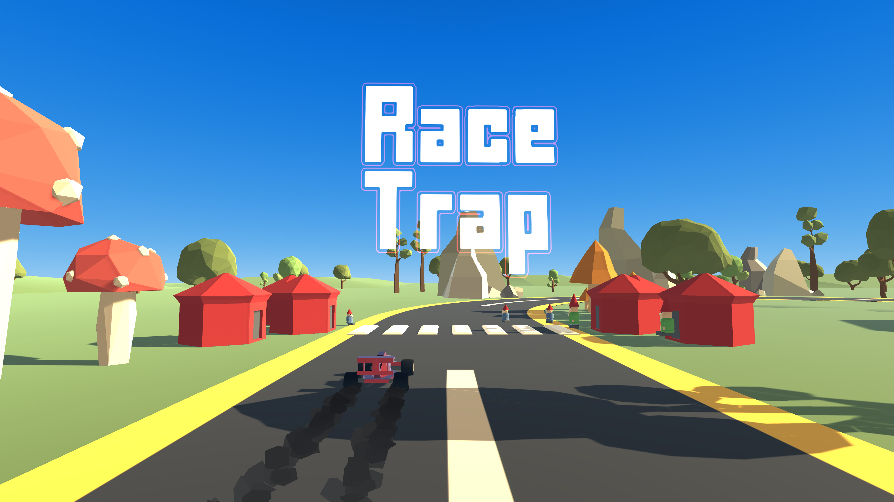
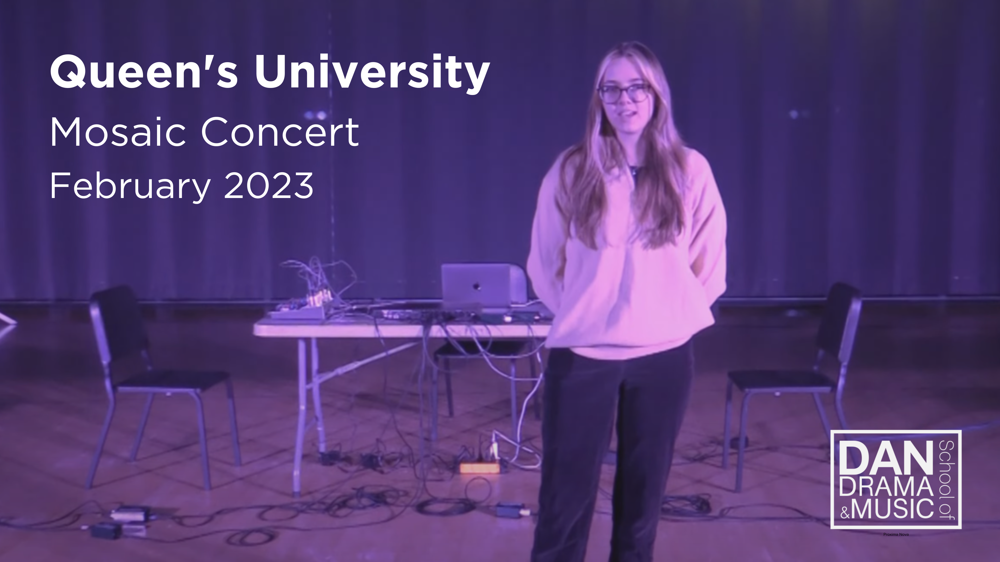

I am working on the GnomeFire Labs team to curate sound for their upcoming game "RaceTrap". This video displays gameplay paired along with the audio loop I created for the RaceTrap main menu and forest level. I am still working alongside the production team to curate additional tracks for upcoming levels and sound effects.

During my undergrad at Queen's University I was invited to perform my works at the tri-annual Mosaic concerts held by the DAN School of Drama and Music. I presented two works at this concert; the first being an electroacoustic piece called Eminence and the second was a collaborative piece with my peer Colin Wasik Low-Cut Peavey, which featured the utilization of feedback looping experimentation.
Description of Project 3.